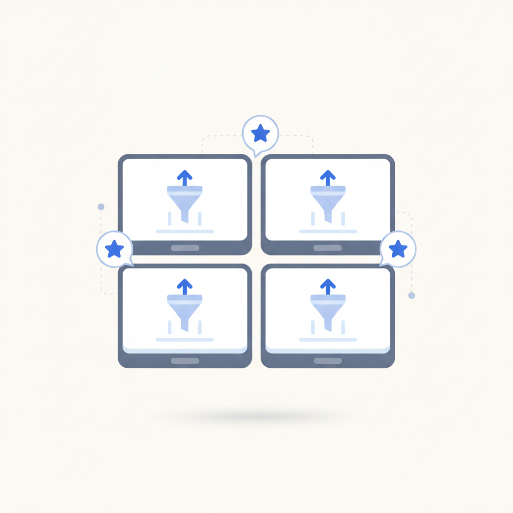
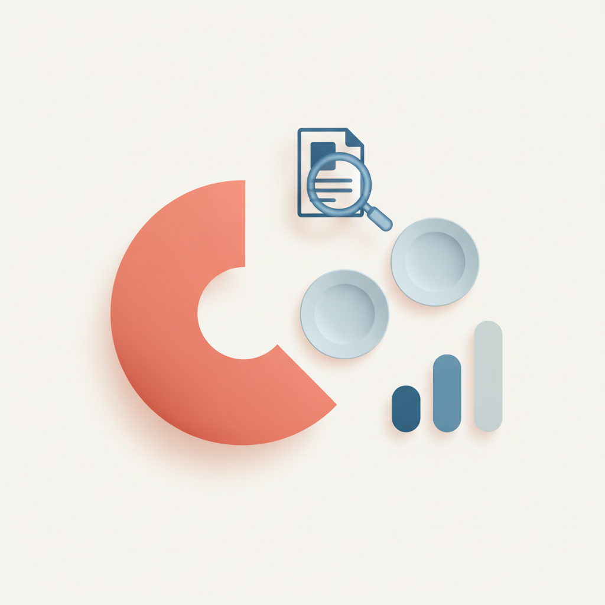
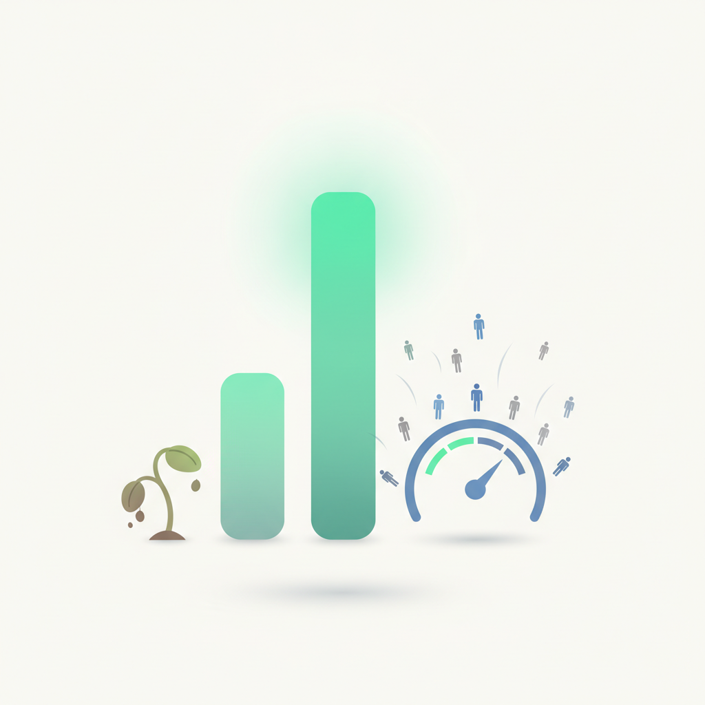
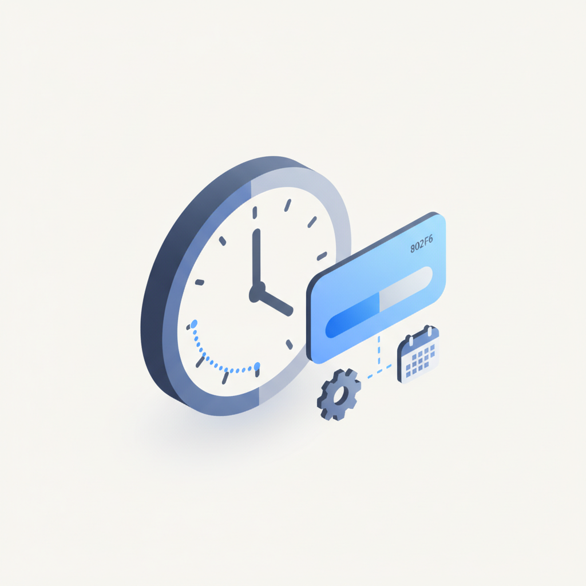
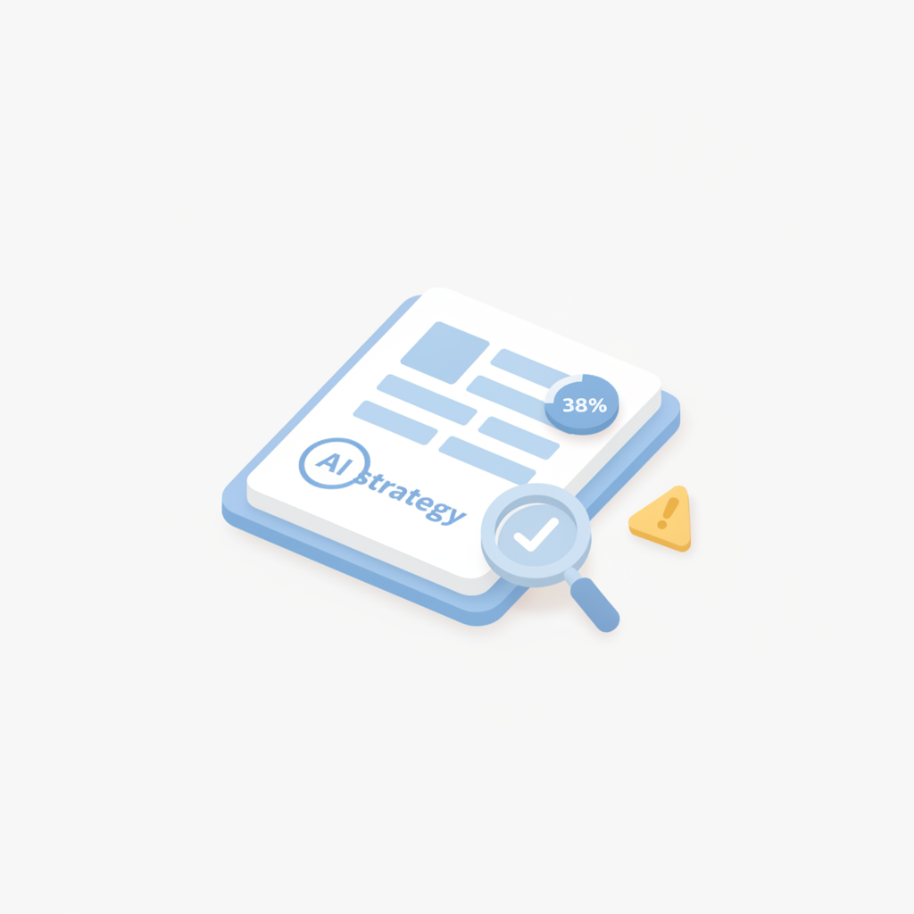
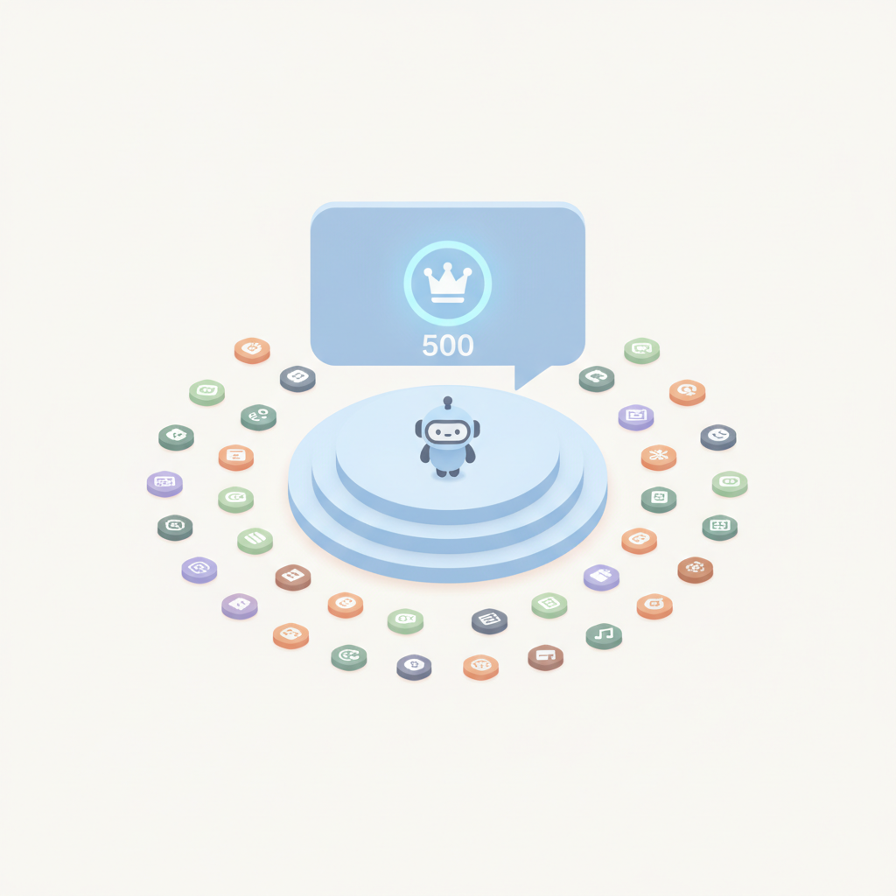
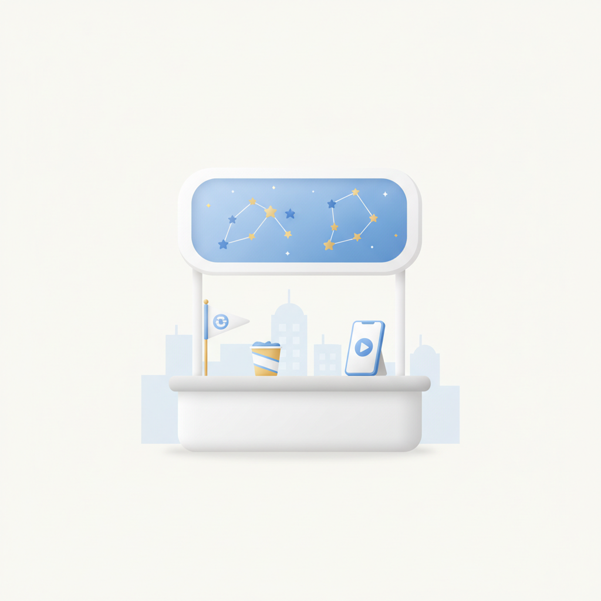
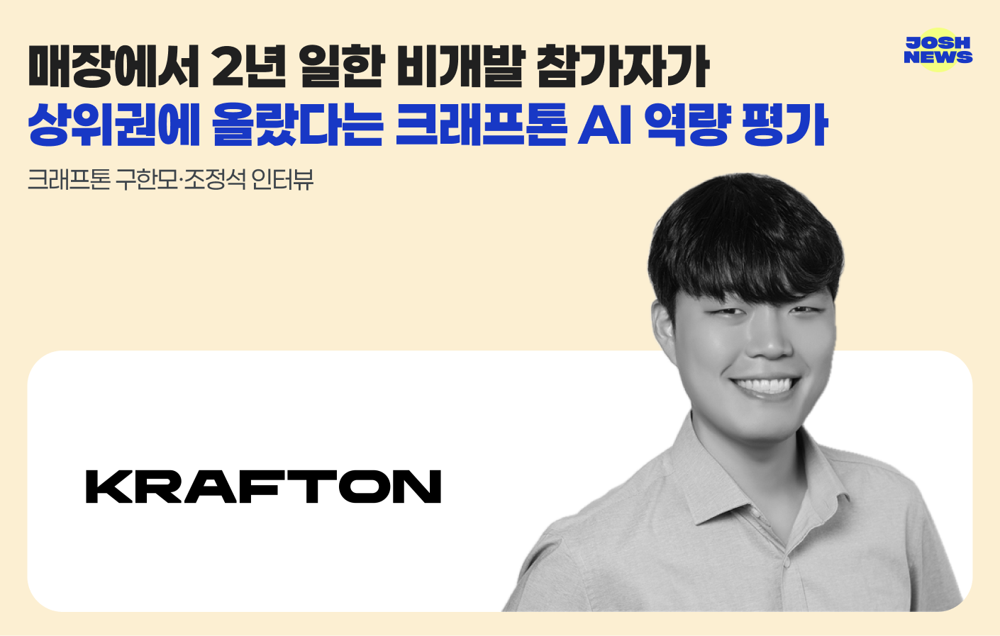

안녕하세요! 금요일 마케팅 소식 전해드립니다 😊 오늘은 오늘의 마케팅 뉴스에서 다룬 'ROAS의 역설'이 눈길을 끕니다. 디지털 광고 기술이 발전하면서 전환 성과 측정과 최적화 능력은 분명 높아졌는데, 오히려 그 지표를 쫓는 데 집중하다 신규 고객 발굴과 미래 수요 창출 기회를 놓치는 구조가 만들어지고 있다는 진단입니다. ROAS 숫자가 올라가는 동안 성장이 조용히 멈춰 있었다는 이 역설은, 측정 가능한 것과 중요한 것이 언제나 같지는 않다는 사실을 날카롭게 짚어냅니다.
빌더조쉬에서는 크래프톤의 AI 역량 평가 이야기가 흥미롭습니다. 매장에서 2년 일한 비개발 직군 참가자가 상위권에 올랐다는 결과인데, AI와 함께 일하는 실력이 개발 배경이나 기술 지식보다 사고 방식과 행동 습관에서 갈린다는 메시지가 담겨 있습니다. 마케터 입장에서도 AI 도구를 얼마나 많이 아느냐보다, 어떤 방식으로 문제를 정의하고 결과를 검토하느냐가 실제 역량을 가른다는 관점으로 이어집니다. ROAS 함정 이야기와도 묘하게 맞닿아 있는 지점입니다.
이번 한 주도 열심히 달려오셨을 텐데, 금요일 아침도 좋은 인사이트로 가득 채우시길 바랍니다! 🔥

1네이버·카카오·구글·메타가 제시한 AI 광고의 미래
AI가 광고 제작·운영을 넘어 소비자의 정보 탐색과 구매 방식까지 바꾸고 있는 가운데, 네이버·카카오·구글·메타 등 주요 플랫폼이 한자리에 모여 AI 시대 광고 전략과 실무 적용 방안을 공유했다. 플랫폼들은 타기팅·입찰·소재 제작·성과 분석의 자동화를 가속하고 있으며, 소비자는 검색 결과를 직접 비교하는 대신 AI에 질문하고 추천받는 방식으로 정보를 탐색하기 시작했다. 마케터는 플랫폼별 AI 광고 자동화 흐름을 이해하고, 변화한 소비자 정보 탐색 경로에 맞는 전략 전환을 서둘러야 한다.
›
2네이버 AI 브리핑 출처 46.5%는 네이버 블로그…챗GPT·제미나이에선 0건
적정마케팅연구소가 발표한 '생성형 AI 출처 인용 리포트 2026년 하반기'에 따르면, 네이버 AI 브리핑이 가장 많이 인용한 출처는 네이버 블로그(46.5%)였지만, ChatGPT와 제미나이 답변에서는 네이버 블로그가 단 한 건도 인용되지 않았다. 생성형 AI 플랫폼마다 답변 근거로 삼는 출처가 크게 달라, 브랜드 노출을 위해서는 플랫폼별로 차별화된 콘텐츠 전략이 필요하다는 지적이다. 네이버 중심 콘텐츠 마케팅에 의존해온 브랜드라면 챗GPT·구글 등 타 AI 플랫폼 대응 전략을 별도로 수립해야 한다.
›
3ROAS는 높아졌는데 성장이 멈춘 이유…'효율성의 함정'
디지털 광고 기술 발전으로 전환 성과 측정과 최적화 능력은 높아졌지만, 측정 가능한 지표 개선에만 집중하다 신규 고객 발굴과 미래 수요 창출 기능이 약해지는 '효율성의 함정'에 빠진 기업들이 늘고 있다는 지적이 나왔다. 마케팅 효과성 전문가 레스 비넷(Les Binet)이 제기한 이 개념은 단기 퍼포먼스 마케팅에 과도하게 집중할 경우 장기 성장이 정체될 수 있다는 경고를 담고 있다. 브랜드 마케터는 ROAS 등 단기 지표 최적화와 장기 브랜드 성장 투자 사이의 균형을 재점검할 필요가 있다.
›
4마케팅 리더 80% 'AI 효과 확신'…73%는 실행까지 1~2주 소요
대형 소비재 브랜드 마케팅 책임자 100명을 대상으로 한 조사에서 80%가 현재 AI 분석 체계가 업무 속도 향상에 효과적이라고 평가했지만, 분석 결과를 당일 실행에 옮길 수 있다고 답한 응답자는 한 명도 없었다. 73%는 분석 후 실제 마케팅 활동 반영까지 1~2주가 걸린다고 답해, AI 도입과 실행 속도 사이에 여전히 큰 간극이 존재하는 것으로 나타났다. AI 분석 도입만으로는 부족하며, 인사이트를 신속하게 캠페인에 반영할 수 있는 운영 프로세스 개선이 병행되어야 한다는 시사점을 준다.
›
5마케팅 리더 38%, AI 전략 제안 검토 없이 수용
호주 미디어 에이전시 벤치미디어의 보고서에 따르면, 고위 마케팅 책임자 71명 중 38%가 AI의 전략 제안을 별도 검토 없이 수용하고 있었으며, 예산·크리에이티브 관련 제안에서는 그 비율이 45%까지 높아졌다. AI 활용이 확대되면서 의사결정 자신감은 커졌지만, 검증 절차는 이를 따라가지 못하는 것으로 나타났다. AI 제안을 그대로 수용하는 관행이 굳어지면 전략적 오판 리스크가 커지므로, 마케터는 AI 출력에 대한 내부 검토 프로세스를 반드시 정비해야 한다.
›
6카카오 '모두의 AI', 개방형 AI 플랫폼으로 연내 출시
카카오가 카카오톡을 기반으로 외부 기업·개발자가 전문 에이전트와 도구를 제공하는 개방형 AI 플랫폼 '모두의 AI'를 연내 정식 출시할 계획이다. 총 34개 기업·기관이 참여하며, 출시 직후 MAU 500만 명을 목표로 하고 2027년부터는 '1인 1에이전트' 개인 맞춤형 서비스를 단계적으로 도입한다. 카카오톡이라는 대규모 플랫폼 위에 AI 에이전트 생태계가 구축되면 광고·커머스·고객 접점 전략에 새로운 채널이 추가될 수 있어 마케터의 관심이 필요하다.
›
7구글, Z세대 겨냥 제미나이 팝업스토어·캠페인 전개
구글이 AI 모델 '제미나이'를 활용해 국내 Z세대·대학생을 겨냥한 온·오프라인 통합 캠페인을 선보인다. 유튜브 인기 웹예능 '전과자'를 운영하는 멀티플랫폼 콘텐츠 제작사 오오티비와 협업해 오는 30일 서울 성수동에 팝업스토어 '스낵이 제미나이 캠퍼스'를 오픈하고, 전국 대학생 대상 커리어 밋업도 진행할 예정이다. Z세대 공략을 위해 플랫폼 기업이 인기 웹예능과 협업하고 오프라인 경험을 결합하는 방식은 브랜드 캠페인 기획에 참고할 만한 사례다.
›
크래프톤 구한모·조정석 인터뷰 — AI와 일하는 실력을 재는 세 가지 축과 점수가 갈리는 행동
- 크래프톤 AI 프론티어 본부가 개발한 Cofa Probe는 20개 이상의 에이전트가 결과물·AI 활용 방식·설명력을 동시에 평가하는 채용 솔루션.
- CJ올리브영이 개발 직군 경력 채용에 라이브 코딩 대신 도입했고, 비개발자 참가자가 해커톤 상위권에 오른 사례가 실증.
- 'AI 네이티브'는 기존 업무 흐름을 효율화하는 수준을 넘어, 기존 SaaS 없이 처음부터 워크플로를 재설계하는 역량으로 정의.

브랜드 진단부터 지금 당장 해야 할 우선순위까지,
30분 무료 상담에서 함께 정리해드려요.
이미 수십 개 브랜드가 상담받았습니다.
내 브랜드처럼, 함께 고민하는 팀원의 마음으로 봅니다.
스타트업 대표·마케팅 담당자를 위한 30분